Este manual mostra o Daily uma tarefa por vez. A primeira parte é para o campo (no celular); a segunda, para o escritório (no computador). Os nomes de telas, botões e mensagens estão escritos exatamente como aparecem no KORbuild, em negrito.
Antes de começar
O Daily abre na área do seu perfil: o campo começa em Hoje, o escritório no Painel. No celular, o menu fica embaixo da tela; no computador, à esquerda. Se você não vê uma tela descrita aqui, o seu perfil não a inclui — veja Perfis e permissões.
Campo: ver o que falta hoje
Para que serve: saber, de relance, quais diários você deve e quais voltaram com pedido de ajuste.
Quem pode fazer
Quem preenche o diário de obra (perfil padrão: Encarregado).
- Abra o KORbuild e toque em Daily na tela de módulos. Ele abre em Hoje.
- Leia os quadros do alto, do mais urgente para o menos:
- vermelho — RDO atrasado: um dia de trabalho passado sem diário. Toque na obra para preencher agora.
- amarelo — falta o RDO de hoje: obras sem o diário de hoje, com o prazo e o tempo que falta (por exemplo, Prazo: hoje às 18h · faltam 1h30).
- vermelho — o escritório pediu ajustes: um diário devolvido, com o motivo entre aspas. Toque em Corrigir agora →.
- Abaixo, Suas obras lista cada obra com a situação do diário de hoje.

O número na aba Hoje (e no ícone do app, onde o celular permite) é o total de pendências: dias atrasados, obras sem o diário de hoje e pedidos de ajuste.
Campo: preencher o diário de obra
Para que serve: registrar o dia na obra: clima, equipe, equipamentos, o que foi feito, o que atrapalhou e as fotos.
Quem pode fazer
O responsável pelo diário da obra, ou quem tem Preencher o diário de obra (perfil padrão: Encarregado).
- Em Hoje, toque na obra. A tela da obra mostra a data, o prazo e os diários anteriores.
-
Toque em Adicionar nova RDO para começar em branco, ou em ou copiar de um RDO anterior para partir de outro dia (veja Copiar um diário anterior).
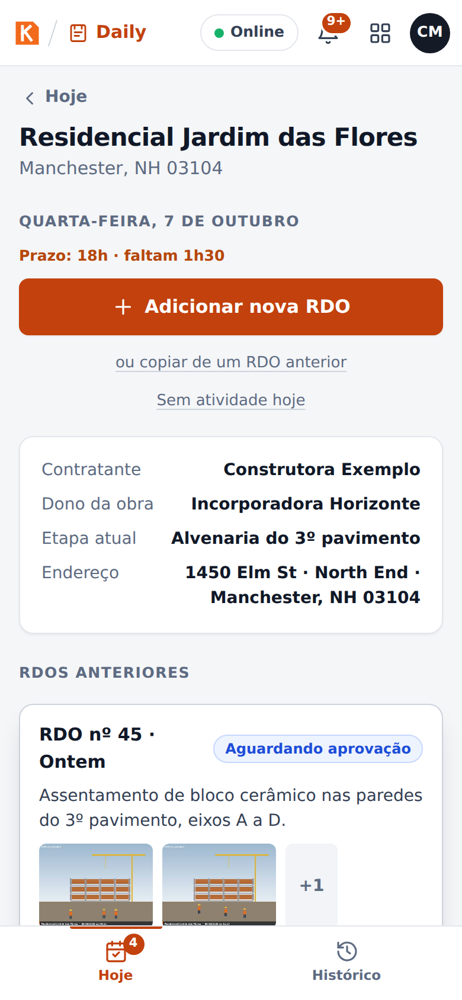
A tela da obra: começar um diário, copiar um anterior ou registrar sem atividade -
O diário abre. No alto, as etiquetas de progresso (Clima, Equipe, Atividades, Fotos) ficam verdes à medida que cada parte fica completa. Preencha as seções abaixo, em qualquer ordem.
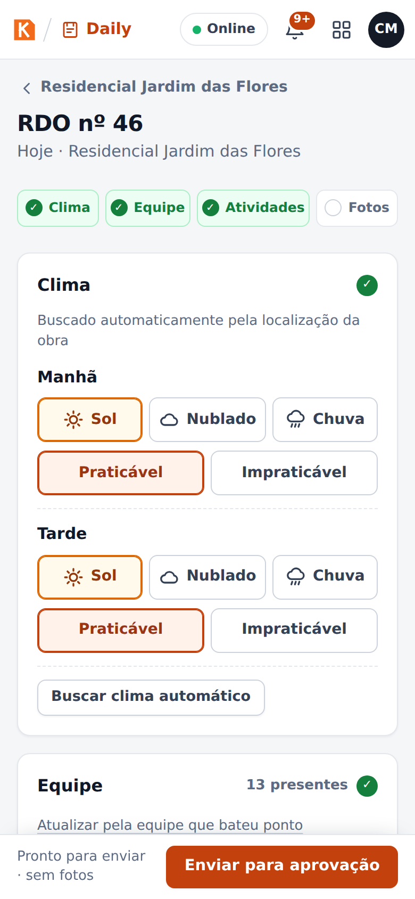
O alto do diário, com as etiquetas de progresso
Clima
O clima vem sozinho, pela localização da obra, para a manhã (7h–12h) e a tarde (13h–17h). Com mais de 2 mm de chuva num período, o período fica Impraticável.
- Confira ou corrija cada período: Sol, Nublado ou Chuva, e Praticável ou Impraticável.
- Buscar clima automático busca de novo (precisa de sinal).
- O relatório mostra se o clima foi automático, ajustado à mão ou informado à mão.
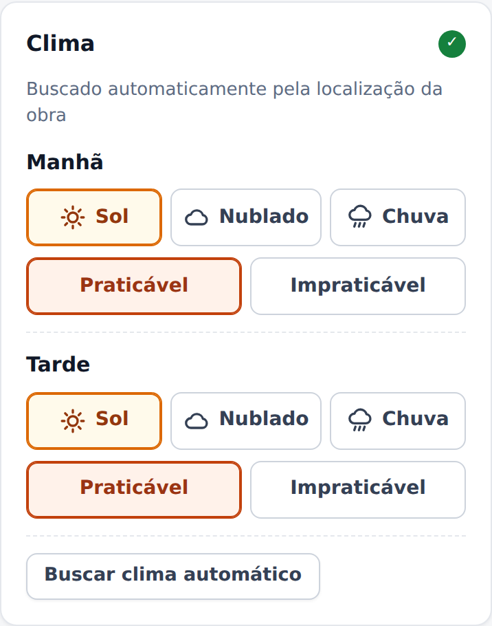
Equipe
- Toque nas funções (+ Pedreiro, + Servente, + Carpinteiro…) para incluí-las e use − e + para dizer quantos estão Presentes e quantas Faltas.
- Função que não está na lista: escreva em Outra função e toque em Adicionar.
- Atualizar pela equipe que bateu ponto preenche a equipe com as pessoas que bateram ponto nesta obra hoje no Crew (o ponto).
- A seção mostra o total de presentes (por exemplo, 13 presentes).
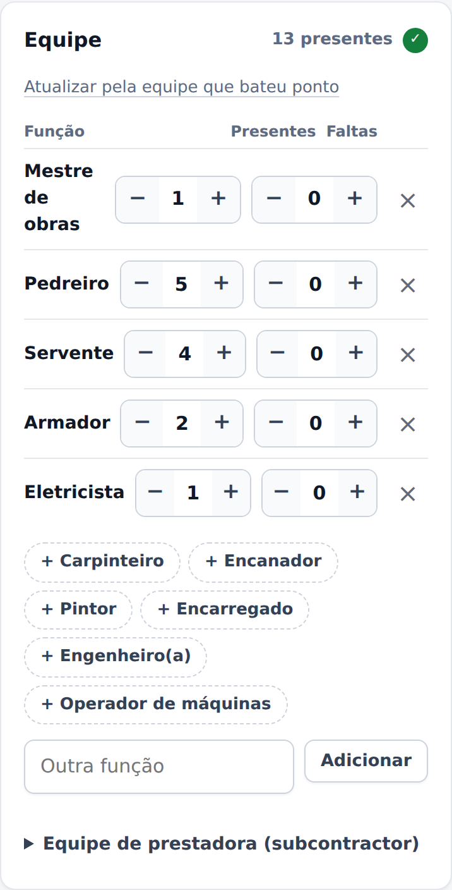
Equipamentos
Inclua os equipamentos da obra com a quantidade e a situação: Operando, Parado ou Em manutenção.
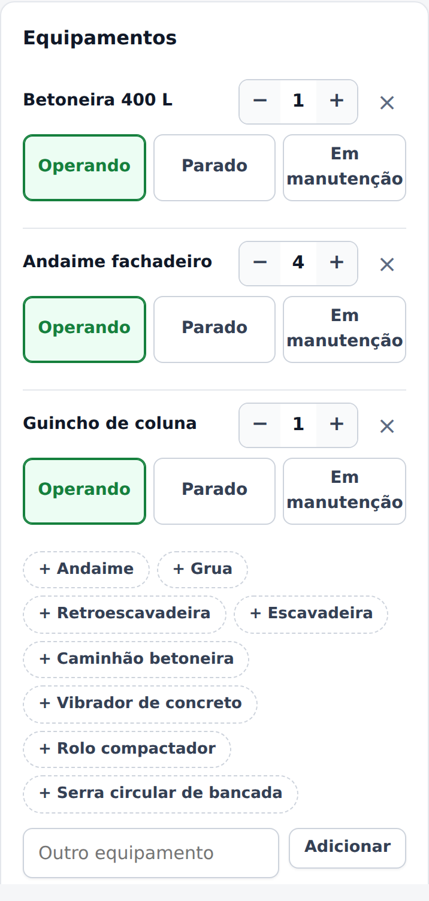
Atividades
Cada atividade tem:
| Campo | O que informar |
|---|---|
| Descrição | O que foi feito. Exemplo: concretagem da laje do 2º pavimento, 45 m³. |
| Local / etapa | Onde, na obra (pavimento, bloco, área). |
| Situação | Em andamento ou Concluída. |
| Etapa do cronograma e % concluído | Só quando a obra tem cronograma: a etapa que esta atividade avançou e quanto ela está agora. O cronograma é atualizado quando o diário é aprovado. |
- Ditar: fale em vez de digitar (usa o reconhecimento de voz do celular).
- Melhorar texto: reescreve o que você digitou ou ditou numa linguagem clara e técnica. Uma janela mostra o antes e o depois; toque em Usar este texto para ficar com ele.
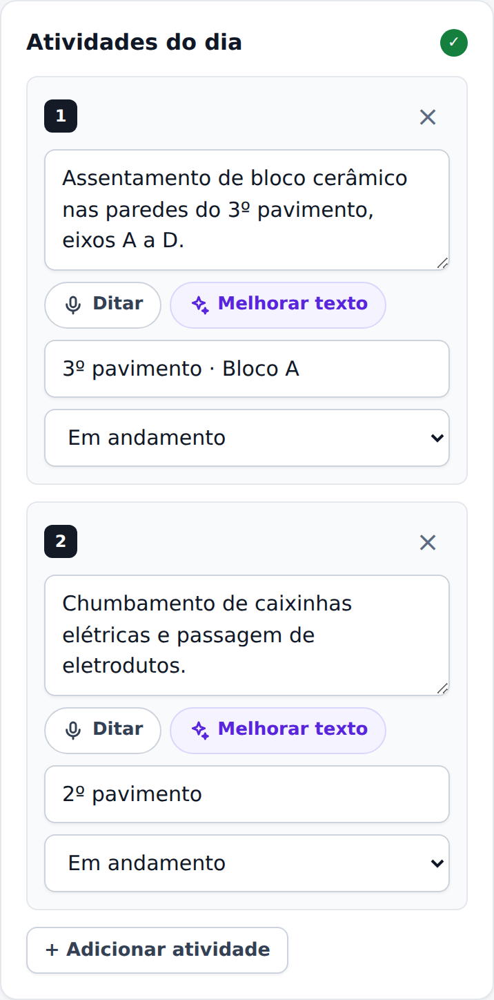
No protótipo
Melhorar texto é simulado com regras simples no celular. No produto, ele usará inteligência artificial, e o texto original fica guardado ao lado.
Ocorrências
Tudo o que atrapalhou o dia: toque no tipo (Material / entrega, Chuva, Equipamento, Segurança / acidente, Equipe / faltas, Visita / fiscalização, Projeto / interferência, Outro) e descreva o que aconteceu e o impacto.
Por que importa
É a seção que protege a empresa numa disputa por atraso: a chuva que parou a concretagem, a entrega que atrasou, a vistoria que não veio — registradas no dia em que aconteceram.
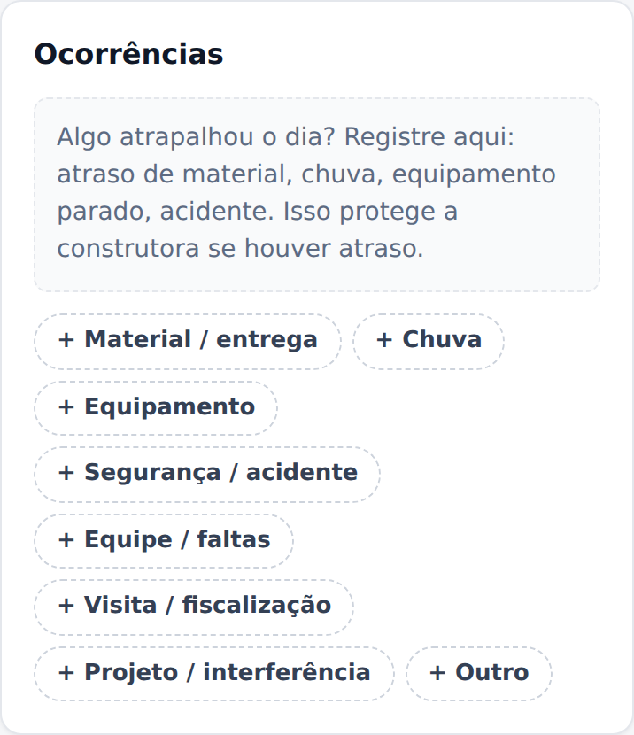
Fotos
- Tirar foto abre a câmera; Da galeria escolhe fotos que já existem.
- Cada foto ganha um carimbo dentro da imagem com a obra, a data, a hora e as coordenadas do GPS, e é reduzida no celular (por exemplo, 4,2 MB viram cerca de 300 KB) para subir rápido mesmo com sinal fraco.
- Ponha uma legenda em cada foto (por exemplo, armação antes da concretagem).
- Se o celular estiver sem GPS, vale a localização da obra, e o carimbo avisa.
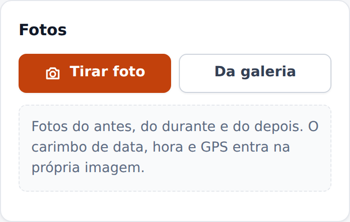
Enviar
A barra de baixo diz o que ainda falta — por exemplo, Falta: pelo menos uma pessoa na equipe, pelo menos uma atividade descrita — ou que o diário está pronto. Aí é só tocar em Enviar para aprovação.
O diário precisa, no mínimo: do clima da manhã e da tarde, de uma pessoa na equipe e de uma atividade descrita. Sem fotos, o KORbuild pergunta antes de enviar:
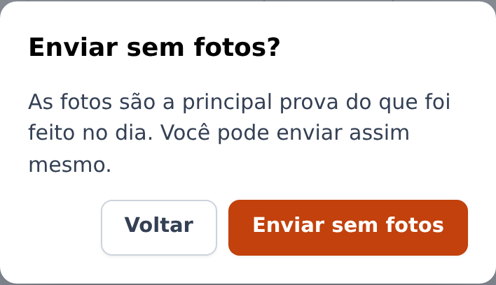
Tudo o que você digita fica guardado no celular na hora, mesmo sem sinal. Você pode sair do diário e voltar depois.
Copiar um diário anterior
Para que serve: a maioria dos dias se parece com o anterior. Copiar poupa digitação.
- Na tela da obra, toque em ou copiar de um RDO anterior.
- Escolha o diário de onde copiar (o mais recente já vem marcado) e toque em Copiar.
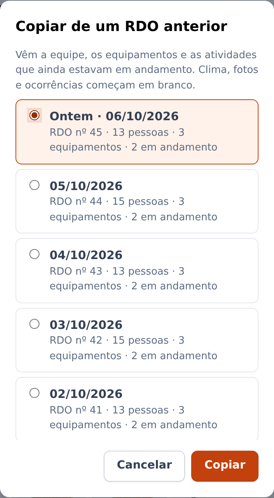
O diário novo traz a equipe (com as faltas zeradas), os equipamentos e as atividades ainda em andamento. Clima, fotos e ocorrências não são copiados: são do dia.
Registrar "sem atividade hoje"
Para que serve: um dia de trabalho sem serviço na obra (chuva, feriado, obra paralisada) também precisa de registro — ele justifica o dia e para os lembretes.
- Na tela da obra, toque em Sem atividade hoje.
- Escolha o motivo: Chuva / tempo impraticável, Feriado ou folga, Obra paralisada pelo cliente, Falta de material, Greve ou paralisação ou Outro motivo, e escreva uma observação, se quiser.
- Toque em Registrar.
O dia fica registrado como o diário daquele dia, vai para o escritório e os lembretes do dia param.
Preencher um diário atrasado
Se um dia de trabalho passado ficou sem diário, ele aparece no quadro vermelho de RDO atrasado em Hoje (até os últimos 3 dias de trabalho). Toque e preencha normalmente — dá para copiar de um anterior também.
O diário enviado depois do prazo é aceito, mas fica marcado Enviado com atraso no relatório e no PDF, com a data e a hora do primeiro envio e o prazo que passou.
Corrigir um diário devolvido
- Em Hoje, o quadro vermelho O escritório pediu ajustes no RDO nº… mostra a obra, a data e o motivo, entre aspas.
- Toque em Corrigir agora →. O diário abre com o pedido no alto.
- Faça os ajustes e toque em Reenviar.
O reenvio depois de um pedido de ajuste não conta como atraso: vale o primeiro envio.
Trabalhar sem sinal
Não há nada especial a fazer: o KORbuild funciona sem internet.
- Enquanto você preenche, tudo fica guardado no celular.
- Se enviar sem sinal, o diário fica Guardado no aparelho e espera numa fila. Assim que a conexão volta, ele sobe sozinho, foto por foto, e o escritório recebe.
- Depois da primeira visita, o app inteiro abre sem internet.
O indicador no alto da tela (Online) mostra a conexão.
No protótipo
Toque em Online para simular a falta de sinal, e toque de novo para voltar.
Ver os seus diários (Histórico)
O Histórico lista todos os diários que você preencheu, do mais novo ao mais antigo, com a situação (Rascunho, Aguardando aprovação, Ajustes pedidos, Aprovado). Toque num deles para abrir.
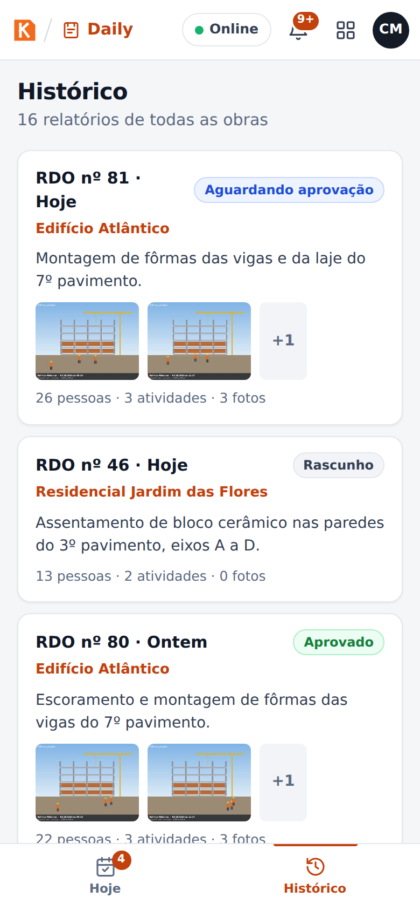
Escritório: acompanhar as obras no Painel
Para que serve: ver, de relance, quais obras mandaram o diário hoje e o que está esperando por você.
Construtora ou prestadora
As telas do escritório são as mesmas para as duas, mas a construtora vê todas as prestadoras das obras dela: um farol por prestadora em cada obra, e os diários de todas na fila. A prestadora vê os próprios diários; os das obras de uma construtora esperam a aprovação da construtora.
Quem pode fazer
Quem tem Acompanhar todas as obras (perfis padrão: Administrador e Gestor de obras).
O Painel mostra:
- Os números do dia: diários de hoje recebidos, aguardando aprovação, obras com diário atrasado, fotos recebidas hoje.
- Obras que ficaram sem diário no último dia de trabalho, com o responsável (aparece a partir das 8h do dia seguinte).
- O farol das obras, uma cor por obra: verde (em dia: o diário de hoje chegou), amarelo (1 dia de atraso), vermelho (2 dias ou mais). Abrir leva à obra.
- Aguardando aprovação: a fila, com Revisar em cada diário.

Escritório: revisar e aprovar um diário
Quem pode fazer
Quem tem Aprovar RDO e enviar ao contratante (perfis padrão: Administrador e Gestor de obras) — na construtora da obra, ou na prestadora quando a obra é direto com o dono.
-
Abra Aprovações (ou Revisar no Painel).
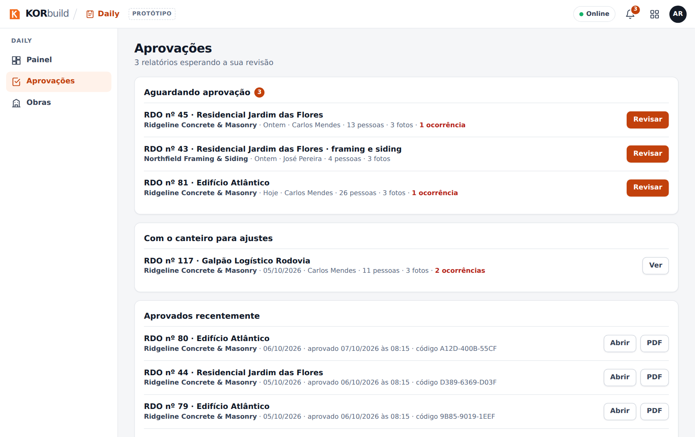
Aprovações: a fila de diários -
O diário abre exatamente como o cliente vai ver: obra, contratante, quem preparou, etapa atual, prazo, clima, mão de obra, equipamentos, atividades, ocorrências, fotos. À direita, o painel de Revisão e o Histórico do diário (quem começou, quem enviou, quando chegou).
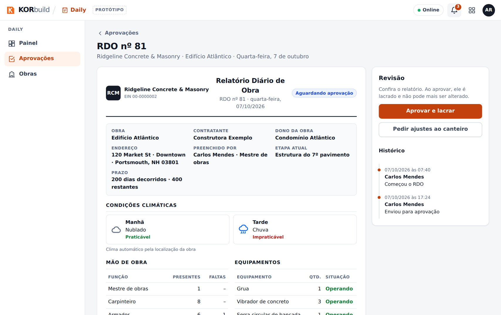
Revisão de um diário -
Escolha:
- Aprovar e lacrar — confirme na janela. O diário é lacrado: recebe um código de verificação e ninguém mais consegue mudá-lo.
- Pedir ajustes ao canteiro — veja a próxima tarefa.
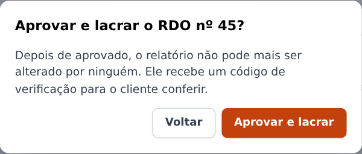
Depois da aprovação, o painel mostra Aprovado e lacrado, o código de verificação e as opções para compartilhar. O encarregado da prestadora vê o diário aprovado, com quem aprovou e a empresa.
Na obra de uma construtora, o escritório da prestadora vê o diário, mas não consegue aprovar: o painel diz Com a construtora.
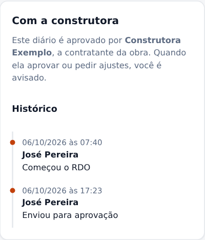
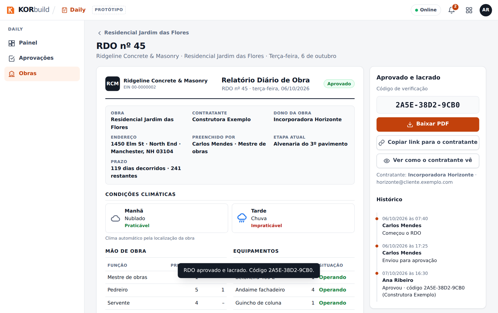
Como funciona o lacre
Na aprovação, todo o conteúdo do diário — inclusive a impressão digital de cada foto — recebe uma impressão digital (SHA-256). Os primeiros caracteres viram o código de verificação. Se alguém mudar uma palavra ou uma foto depois, o link do cliente mostra que o documento não bate mais com o que foi aprovado.
Escritório: pedir ajustes ao canteiro
- No diário, clique em Pedir ajustes ao canteiro.
- Em O que precisa ser corrigido?, escreva o motivo (por exemplo, falta a foto da armação antes da concretagem).
- Clique em Enviar pedido.
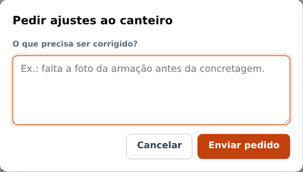
O diário volta para o campo com o motivo e aparece em vermelho na tela Hoje do encarregado. Quando ele reenviar, o diário volta para a sua fila.
Escritório: compartilhar com o cliente
No diário aprovado:
- Copiar link para o contratante — copia um link para mandar por e-mail ou mensagem. O cliente abre em qualquer navegador, sem conta.
- Ver como o contratante vê — abre esse link, para você ver o que o cliente vê.
- Baixar PDF — o diário em PDF, com o logo da empresa, a obra, o clima, as tabelas, as fotos com legenda, data e GPS, o lacre e as assinaturas.
A página do cliente confere o lacre toda vez que abre. Se o conteúdo bate com o que foi aprovado, ela mostra Documento autêntico, com quem aprovou e quando.

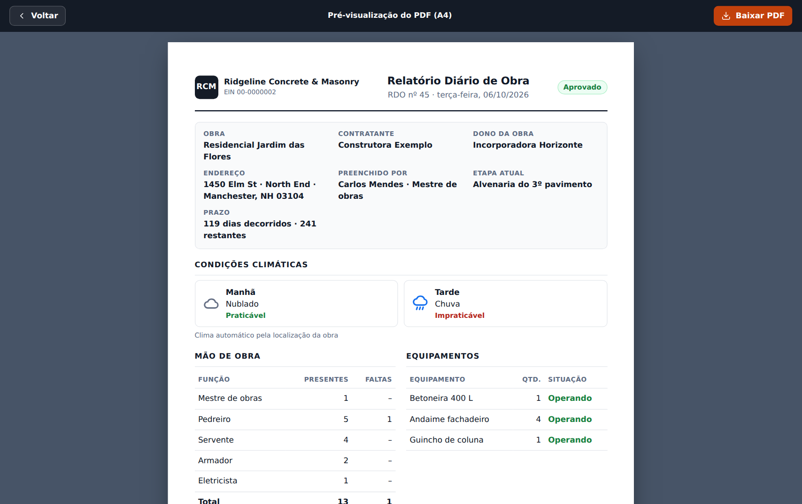
No protótipo
O PDF é impresso pelo navegador (escolha Salvar como PDF na janela de impressão). No produto, ele é gerado no servidor, pronto para baixar. O link do cliente só funciona no mesmo navegador, porque o protótipo não tem servidor.
Escritório: acompanhar uma obra
- Abra Obras: todas as obras ativas, com o farol e o número de diários recebidos.
-
Abra uma obra: endereço, contratante e partes, o cartão do Cronograma (quando a obra tem cronograma), a configuração do diário (responsável, prazo, dias de trabalho) e todos os diários recebidos.
Para a construtora, a obra mostra no lugar disso Prestadoras nesta obra — para cada prestadora, quem está na obra agora, quem veio hoje, as horas de hoje e da semana, e a lista de pessoas com função, entrada e horas (nunca valores em dinheiro) —, os cronogramas publicados pelas prestadoras e os diários recebidos, separados por prestadora.

Prestadoras numa obra da construtora
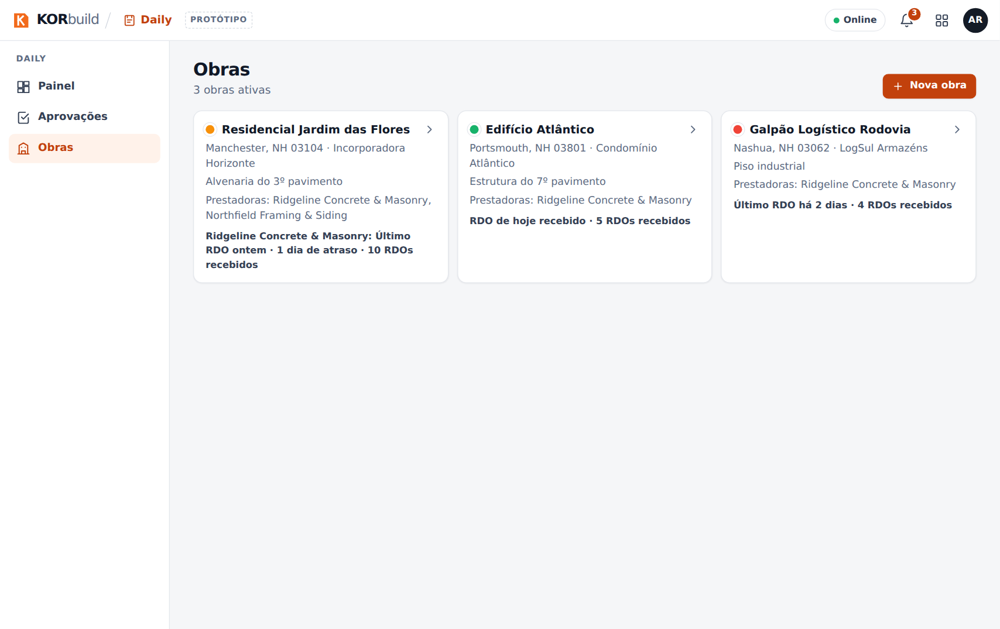
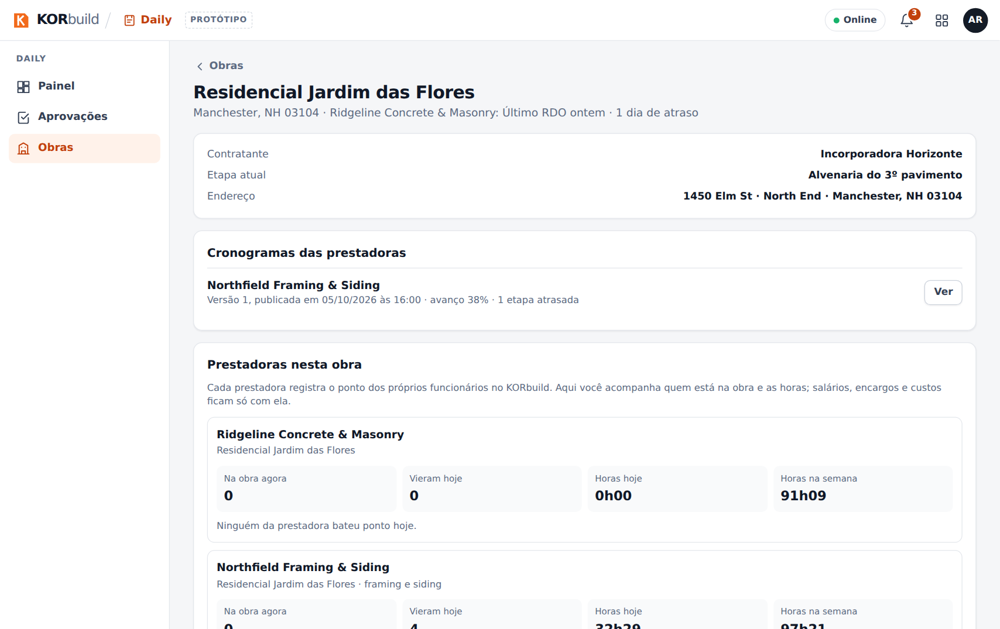
Na obra, Editar a obra (para quem pode cadastrar obras) abre o cadastro: endereço, cerca, prazo, responsável e dias de trabalho.
Notificações
O sininho no alto de todas as telas reúne os alertas de todos os módulos, com o número de não lidas e Marcar todas como lidas. No Daily:
| Quando | Quem | Mensagem |
|---|---|---|
| 16h | Responsável pela obra | Falta o diário de hoje; prazo às 18h. |
| 18h | Responsável pela obra | O diário de hoje está atrasado. |
| 8h do dia seguinte | Escritório | Obras sem diário no último dia de trabalho, com o responsável. |
| Na hora | Campo | O escritório pediu ajustes num diário. |
| Na hora | Campo | O seu diário foi aprovado. |
| Na hora | Escritório | Um diário aguarda aprovação. |
| 8h, depois do fim de uma etapa | Escritório | Uma etapa do cronograma está atrasada (quando a obra tem cronograma). |
No celular, os mesmos lembretes chegam também como notificações do aparelho (quando permitidas). Em Hoje, Como funcionam os lembretes? Testar no celular mostra os horários e manda uma notificação de teste de verdade.
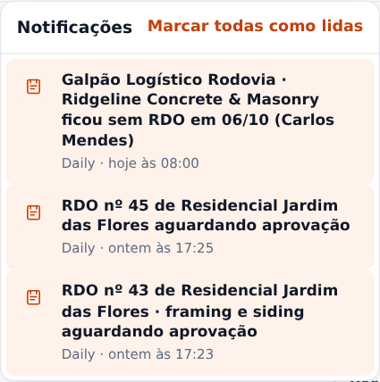
No protótipo
Os lembretes das 16h e das 18h só disparam com o app aberto. No produto, o servidor envia mesmo com o app fechado. Por enquanto não há SMS nem e-mail.
Mensagens e alertas
| Mensagem | Onde | O que fazer |
|---|---|---|
| Falta: pelo menos uma pessoa na equipe, pelo menos uma atividade descrita | Barra de baixo do diário | Preencha o que está listado; o botão envia quando nada faltar. |
| Enviar sem fotos? | Ao enviar | Voltar e incluir fotos, ou Enviar sem fotos. |
| O RDO é obrigatório em todo dia de trabalho. Preencha agora; ele fica registrado como enviado com atraso. | Hoje, quadro vermelho | Abra a obra e preencha o diário. |
| Falta o RDO de hoje… Prazo: hoje às 18h | Hoje, quadro amarelo | Preencha o diário de hoje ou registre Sem atividade hoje. |
| O escritório pediu ajustes no RDO nº… | Hoje, quadro vermelho | Corrigir agora →, ajuste e Reenviar. |
| Guardado no aparelho | Situação do diário | Nada: ele sobe quando o sinal voltar. |
| Documento autêntico | Link do cliente | O relatório é exatamente o que foi aprovado. |
| O link do cliente diz que o documento não bate | Link do cliente | O conteúdo foi mudado depois da aprovação: fale com a empresa. |